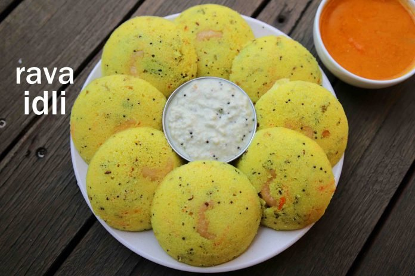

Rava idli is a popular Breakfast food that originated in the Tiffin centers of Karnataka. It is a variation of the traditional Idli recipe but made with semolina, curd and some spices. Rava means semolina and idli are steamed cakes. Making rava idli is quick and easy since it is an instant recipe which needs no grinding and fermentation.

Ingredients
3 Tsp Oil
1 TspMustard
1/2 TspCumin
1 Tsp Chana Dal
1 pinchAsafoetida
FewCurry Leaves
1 No.of Chilli, Finely Chopped
1 Inchof Ginger, Finely Chopped
2 Tbspof Carrot, Grated
1/4 Tbspof Tumeric
1 cupof Semolina
3/4 cupof Curd
2 Tbspof Coriander, Finely Chopped
1/2 Tspof Salt
1/2 cupof Water
1/4 cupof Fruit Salt
5 halvesof Cashews
Preparation
Firstly, in a kadai heat 3 tsp oil and splutter 1 tsp mustard, ½ tsp jeera, 1 tsp chana dal, pinch hing and few curry leaves.
Now add 1 chilli, 1 inch ginger and saute for a minute.
Further add 2 tbsp carrot, ¼ tsp turmeric and saute for 2 minutes.
Keeping the flame on low add 1 cup rava and roast well.
Roast for 5 minutes or until the rava turns aromatic.
Cool the rava completely and transfer to a bowl.
Furthermore, add ¾ cup curd, 2 tbsp coriander and ½ tsp salt.
Mix well forming a thick batter.
Now add ½ cup water and mix well forming a smooth batter.
Rest for 15 minutes or until the rava absorbs water.
Mix well and add water as required, to form an idli batter consistency batter.
Grease the idli plate with oil and place cashews in the centre.
Just before steaming add a ¼ tsp fruit salt and mix well till it turns frothy. alternatively, add a pinch of baking soda.
Pour the batter immediately into the idli plate. do not rest the batter.
Steam the rava idli for 13 minutes on medium flame.
Finally, serve instant rava idli with coconut chutney and sambar.